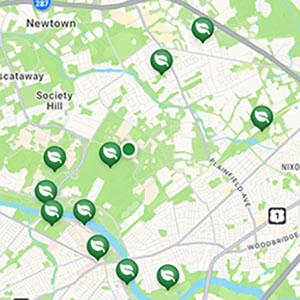
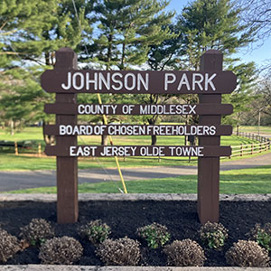
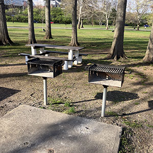

Find your next escape.
Don’t let the stresses of academic life stop you from discovering the best outdoor spots, on and off campus.
Welcome to The Park Project!
If you’re a student who wants an escape from the demands of academic life or just someone who wants to discover hidden gems among our increasingly urban landscapes. Here we document nearby parks and green spaces, specifically through the eyes of a busy student. This includes feature essays, park maps, reviews, recreational activities, and plenty of pictures.
Our primary focus is the area surrounding the Rutgers New Brunswick campus, but we have hopes of expanding to other colleges and universities. We believe that parks are underutilized by the student population and hope that the many features and uses of parks that we showcase here will encourage you to check them out for yourself.
Find Parks

Want to find the best parks in your area? Check out our proven method and the highest-rated tools.
Our Favorites

Looking for a new spot to switch things up? Browse our selection of favorite parks to discover somewhere new.
Park Activites

Wondering what you can do in a park? Explore our list of recreational activities that could make your next outdoor visit that much better.